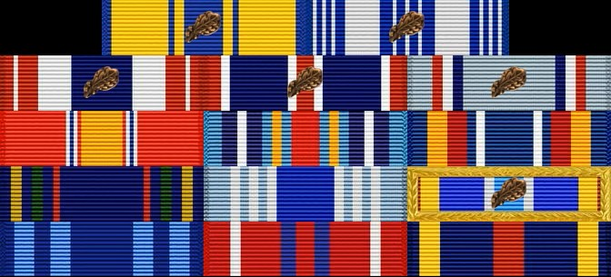

Air Force Career
My Air Force career began in avionics maintenance, where I worked directly on aircraft systems in a fast-paced, high-responsibility environment. The job required attention to detail, technical accuracy, and the ability to perform under pressure while supporting mission readiness.
As I gained experience, I took on additional responsibility through leadership and mentorship roles, helping guide newer Airmen and contributing to team performance. This shift gave me a broader perspective on how people learn, develop, and operate in demanding environments.
I now serve as an instructor, where I develop and deliver training focused on preparing Airmen to perform effectively in real-world situations. This role has reinforced the importance of clear communication, structured training, and building confidence alongside technical skill.
Technical Skills and Experience
My technical background is rooted in F-15 avionics systems, where I developed experience in troubleshooting, fault isolation, and system-level diagnostics across complex aircraft systems. I routinely interpret technical data, including wiring diagrams, schematics, and maintenance instructions, to identify and resolve issues in high-pressure environments.
In addition to hands-on maintenance, I have managed COMSEC responsibilities and maintained accountability of sensitive equipment, reinforcing the importance of precision, security, and reliability.
As an instructor, I have expanded these technical skills into training and development, delivering structured instruction, simplifying complex concepts, and guiding learners through both theoretical and practical applications. This experience allows me to bridge the gap between technical expertise and effective learning.
Achievements and Service

Rank:
Sergeant (E-5)
Technical Sergeant (E-6) Select
Awards & Decorations
- Air Force Commendation Medal
(with one oak leaf cluster) - Air and Space Achievement Medal
(with one oak leaf cluster) - Air Force Meritorious Unit Award
(with one oak leaf cluster) - Air Force Outstanding Unit Award
(with oak leaf clusters) - Air Force Good Conduct Medal
(with oak leaf clusters) - National Defense Service Medal
- Air Force Global War on Terrorism Service Expeditionary Medal
- Air Force Global War on Terrorism Service Medal
- Nuclear Deterrence Operations Service Medal
- Air and Space Overseas Service Ribbon (Long)
- Air and Space Expeditionary Service Ribbon
(with oak leaf clusters and gold border) - Air and Space Longevity Service Award
- USAF NCO PME Graduate Ribbon
- Air and Space Training Ribbon
Operations & Exercises
- COPE TIGER
- COPE NORTH / SOUTH
- Red Flag Nellis
- Spartan Shield
- Agile Liberty
- Inherent Resolve
- Atlantic Resolve
- Poseidon's Rage
- Tactical Leadership Program, Spain
Roles
| Position | Unit / Location | Dates |
|---|---|---|
| Instructor | 365th TRS, Sheppard AFB, TX | 2025 - Present |
| Support Craftsman | 492nd FGS, RAF Lakenheath, UK | 2023 - 2025 |
| Avionics System Craftsman | 492nd FGS, RAF Lakenheath, UK | 2022 - 2023 |
| Avionics System Journeyman | 492nd FGS, RAF Lakenheath, UK | 2021 - 2022 |
| Avionics System Journeyman | 18th AMXS, Kadena AB, Japan | 2020 - 2021 |
| Avionics System Apprentice | 18th AMXS, Kadena AB, Japan | 2019 - 2020 |
| Student | 365th TRS (F-15 Avionics) | 2018 - 2019 |
| Basic Military Training | Lackland AFB, TX | 2018 |